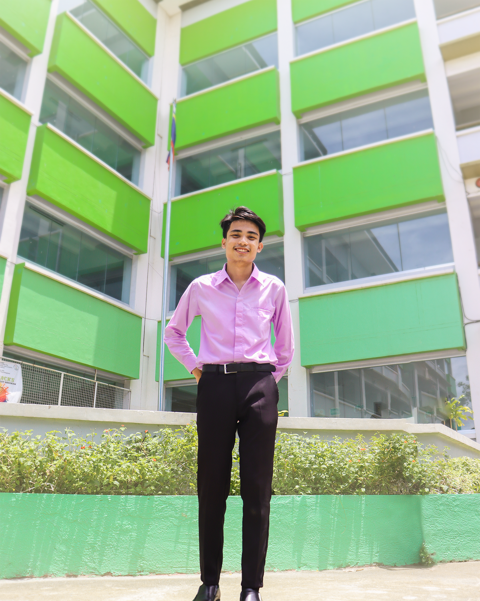

Know more about
Jhon
Vincent
Gayta
Second Year Student
Bachelor of Science in Computer Science
at Pamantasan ng Lungsod ng Muntinlupa
Second Year Student
Bachelor of Science in Computer Science
at Pamantasan ng Lungsod ng Muntinlupa
I am Jhon Vincent L. Gayta, Also called as "JV" or "Jeyb". Currently, I am living at Sitio Pugad Lawin, Almanza Dos, Las Piñas City — It is also the location where I born. I was born on October 06, 2023, which means that I am turning 20 years old this coming 6th of October, 2023. I am a son of Mr. Vicente S. Gayta Jr. and Mrs. Mary Jane L. Gayta; and a sibling/brother of Elaiza Gayta and Mikaela Gayta.
I took my elementary education at Pilar Village Elementary School, my junior high school at Las Piñas National High School-Almanza, and my senior high school at Las Piñas City National Senior High School-Doña Josefa Campus, under the strand of TVL-ICT.
It is also become my routine every school year to maintain my grades and seek for improvement, especially in public speaking. Public speaking is my biggest fear and weakness, that is why I am always tensed when speaking in front of somebody. But I do not want to waste and neglect my clever and creative mind, so I keep practicing every day to overcome this flaw.
As I vision myself to this subject, Information Management, I see and expect that I will be more familiar with database and back-end field of web development. I also expect that the leaning process, especially the laboratory activities, will be tough due to strict policies in rubrics and grading system that was presented to us in orientation. But for me, it will benefit me to grasp and ingest all the future learnings. That is why it would not be a problem to me.
Five years from now, I see myself that I amat the field of web development or in software engineering. It could be here in local or international. My other vision is I am still getting my Master's Degree in IT or Computer Science. I have no assurance with these since fate is unexpected, but I do hope to have at least one from these.
I love to do photography, specifically, portrait shots. I often associate my photography skills with human features. I still prefer to capture genuine moments of people and also, help others to express themselves confidently though giving them a shot from a camera.
Not only photography, but videography and video editing is also my forte. It is where I express my creativity and emotion. How? through applying editing techniques, camera angle, and simple sound design utilization. By applying all of these, storytelling could be better—which is the most significant goal of video editing. I discovered my video editing potential when I was in grade 10. It was all started in a group activity. Wherein, we need to create an inspiring video that must have a specific campaign. After trying to be a leader of that video project, I realized that I can pull it out—storytelling through video editing. Due to it, I am encouraging myself to be better with this skill and know more the conventions.